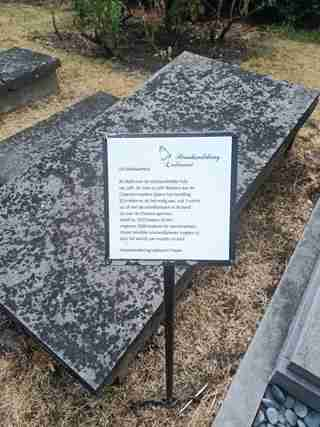

ما هو موثق مباشرة؟
الاسم، تاريخا الميلاد والوفاة، ووصفها بأنها قابلة بلدية شام مثبتة على شاهد القبر. كما أن لوحة الشكر المحلية تسميها مع باربييرس وتصف طبيعة خدمتهما.
قابلة بلدية شام، تحفظ شواهد المكان اسمها وعملها في خدمة الأمهات والأطفال. هذا الملف يعتمد على تصوير ميداني أصلي للقبر ولوحة الشكر الموجودة في شام، مع فصل ما يظهر مباشرة في الشاهد عن السياق التفسيري.


الاسم، تاريخا الميلاد والوفاة، ووصفها بأنها قابلة بلدية شام مثبتة على شاهد القبر. كما أن لوحة الشكر المحلية تسميها مع باربييرس وتصف طبيعة خدمتهما.
القيمة هنا ليست تحويل السيرة إلى أسطورة، بل حفظ أثر عمل يومي ارتبط بالولادة والرعاية والانتقال ليلاً إلى بيوت الأمهات في ظروف صعبة.
المصدر البصري: تصوير ميداني أصلي لـ LuxDot — شام، أغسطس 2026.
ملف مرتبط: باربييرس — شريكة الخدمة في ذاكرة شام ←